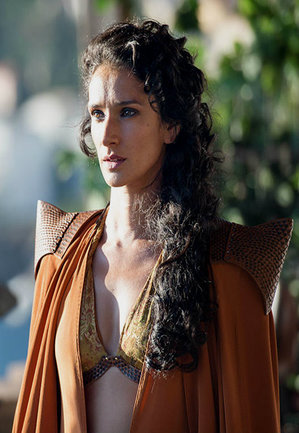

| Nom | Image | Biographie |
|---|---|---|
| Oberyn Martell |
Interprète Pedro Pascal Saison(s) 4 Titre(s) Prince Alias La Vipère Rouge de Dorne Statut Décédé Mort Crâne écrasé par Ser Gregor Clegane Origine Lancehélion Allégeance Maison Martell Culture Dorniens Religion Foi des Sept Relation Ellaria Sand - amante Parents Rickard Stark - père † Enfant(s) Obara Sand - fille † Nymeria Sand - fille † Tyerne Sand - fille Elia Sand - fille 4 autres filles Fratrie Doran Martell - frère † Elia Martell - sœur † | |
| Doran Martell |
Interprète Alexander Siddig Saison(s) 5, 6 Titre(s) Prince de Dorne Seigneur de Lancehélion Statut Décédé Mort Poignardé à la poitrine par Ellaria Sand. Origine Lancehélion Allégeance Maison Martell Culture Dorniens Relation Mellario - épouse (anciennement) Enfant(s) Trystan Martell - fils † Fratrie Elia Martell - sœur † Oberyn Martell - frère † | |
| Ellaria Sand |  |
Interprète Indira Varma Saison(s) 4, 5, 6, 7 Titre(s) Amante de cœur Statut Vivante Origine Denfert Allégeance Maison Martell Maison Uller Maison Targaryen Religion Anciens dieux Foi des Sept Culture Dorniens Relation Oberyn Martell - amant † Enfant(s) Tyerne Sand - fille † Elia Sand - fille |
| Tyene Sand |  |
Interprète Rosabell Laurenti Sellers Saison(s) 5, 6, 7 Statut Présumé mort Mort Empoisonnée par Cersei Lannister Origine Winterfell Allégeance Maison Martell Religion Anciens dieux de la Forêt Culture Dorniens Parents Oberyn Martell - père † Ellaria Sand - mère Enfant(s) Enfant à naître † Fratrie Obara Sand - demi-sœur † Nymeria Sand - demi-sœur † Sarella Sand - demi-sœur Elia Sand - sœur Deux autres sœurs Deux autres demi-sœurs |
| Obara Sand |
Interprète Keisha Castle-Hughes Saison(s) 5, 6, 7 Statut Décédée Mort Empalée avec sa propre lance par Euron Greyjoy Origine Winterfell Allégeance Maison Martell Culture Dorniens Parents Oberyn Martell - père † Fratrie Nymeria Sand - demi-sœur † Tyerne Sand - demi-sœur † Elia Sand - demi-sœur Quatre autres demi-sœurs |
|
| Nymeria Sand |
Interprète Jessica Henwick Saison(s) 5, 6, 7 Alias Nym Statut Décédée Mort Étranglée avec son propre fouet par Euron Greyjoy Origine Winterfell Allégeance Maison Martell Culture Dorniens Parents Oberyn Martell - père † Fratrie Obara Sand - demi-sœur † Tyerne Sand - demi-sœur † Elia Sand - demi-sœur Quatre autres demi-sœurs | |
| Trystan Martell |
Interprète Toby Sebastian Saison(s) 5, 6 Titre(s) Prince Statut Décédé Mort Empalé à l'arrière de la tête par Obara Sand Allégeance Maison Martell Culture Dorniens Parents Doran Martell - père † |